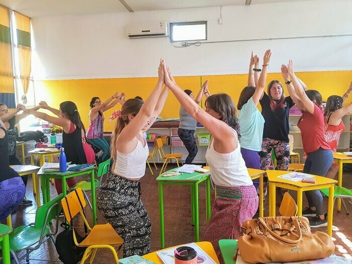

¿Está buscando una manera divertida y eficaz de llevar los beneficios del yoga a sus jóvenes estudiantes? ¡No busque más allá de la Academia YogaKiddy! Nuestro equipo de expertos se especializa en la entrega de un taller personalizado, práctico que se adapte a las necesidades de su equipo educativo y se centrará en la enseñanza de yoga para niños.
Con módulos que van de 4 a 18 horas, nuestro taller cubre todo, desde Yoga, Neurociencias y Educación hasta metodologías de aprendizaje basadas en el juego y herramientas y recursos específicos para trabajar con niños. Aprenderás cómo implementar intervenciones exitosas de yoga durante la jornada escolar, ya sea en persona o en línea, y crear un ambiente de clase más positivo y relajado para tus alumnos.
Además, como bonus, recibirás materiales didácticos exclusivos para utilizar en tus clases, incluyendo vídeos de apoyo, PDFs imprimibles y materiales físicos para complementar tus intervenciones de yoga de forma lúdica.
No dejes pasar esta oportunidad de liberar el poder del yoga para niños en tu aula y convertirte en una fuerza positiva de cambio en la vida de las futuras generaciones. Contáctanos hoy para solicitar un presupuesto y programa a la medida de las necesidades de tu colegio. Viajamos en Chile desde Arica a Punta Arenas, mínimo 10 participantes.
¿Estás listo para llevar tu clase al siguiente nivel con el poder del yoga? No busques más, YogaKiddy Academy. Nuestro equipo de expertos, dirigido por Peggysue Silva Stuardo y Carmen Sepúlveda, tiene más de 12 años de experiencia trabajando con niños y formación especializada en instrucción de yoga, danzaterapia y terapias complementarias.
Nuestro taller personalizado y práctico te enseñará las técnicas y ejercicios que realmente funcionan para guiar con éxito tus próximas intervenciones de yoga infantil en tu aula. Aprenderás a crear un ambiente de clase más positivo y relajado para tus alumnos, así como beneficios físicos, cognitivos, emocionales y pedagógicos para los niños.
Además, al finalizar el taller, recibirá un certificado de participación y acceso a nuestra comunidad de educadores afines. Tanto si eres principiante como si ya tienes experiencia como profesor de yoga, te ayudaremos a descubrir la magia del yoga para niños en tu aula y a convertirte en una fuerza positiva para el cambio en las vidas de las generaciones futuras.
¿No tienes conocimientos previos de yoga? No hay problema. Este curso está diseñado para educadores de todos los niveles de experiencia. Ponte en contacto con nosotros hoy mismo para solicitar un presupuesto y un programa a la medida de las necesidades de tu escuela, y nosotros nos encargaremos del resto. Incluso proporcionamos factura y somos proveedores del Estado, por lo que puede gestionar esta formación a través de una orden de compra. Juntos, podemos cambiar el mundo, niño a niño.